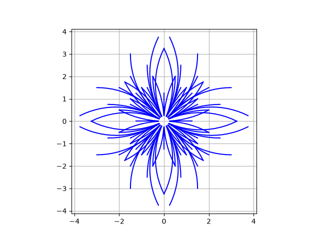
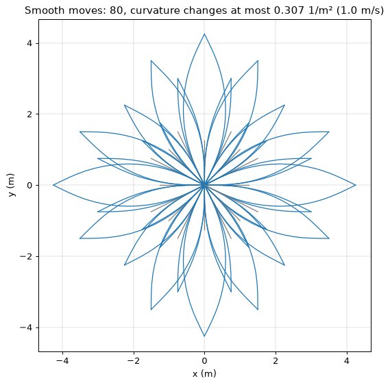

Every controller we use or are looking at, on one page: what it is, what it's good and bad at, what it needs, and where it would run on our car.
The short version
- Speed and brake: feed-forward + PI. In the ROS bridge first, then in
spine-coreon the ESP32. The bridge's loop has a smooth stop (29 Oct); an LQI is built inspine-coreto compare (speed_loop:=lqi, section 2a). - Steering, following a path: MPPI that knows the lag (
aav_mppi_lag, Rust) is the default (sim, bench and car); Nav2's MPPI was, until Nav2 went on 17 Nov. Our trackers (pure pursuit, Stanley, LQR, MPC) are trials; they reverse since 19 Nov (TODO 174: a backwards stretch is driven mirrored); MPC is the leading candidate among them. - The steering motor: the Jrk G2's own position PID, underneath everything.
- Obstacle tours: the State Lattice plans (since 1 Nov; ours in Rust,
aav_planner, since 14 Nov), MPPI follows. Hybrid-A* and the diffusion planner are challengers (Planners). - Trials: LQR, Stanley, MPC and the lag-aware ones (
mpc_lag,mppi_lag) run beside the defaults, picked at launch (tracker:=), and scored on the same routes. Built since 29 Oct; the scores: Trials, MPPI that knows the lag. - Our own costmap, planner, navigator and smoother (Rust, 8 Nov) are the defaults since Nav2 went (17 Nov, Nav2, as it was): Switches.
- Localization has its own trials: AMCL, NDT and KISS-ICP beside today's EKF (section 8).
- Every number here is a guess until the car is measured (Measure the car, Actuator tests).
The basics (feedback, PID, Ackermann) are in Learn: control. The maths (poles, margins, state space) is in The car as a linear model and Learn: state space. This page links to them and doesn't repeat them.
1. The layers: which loop runs where
ORIN #1 senses
┌───────────────────────────────────────────────┐
│ planner: State Lattice (ours) 1 Hz │ the costmap, the goal
│ │ a path │
│ ▼ │
│ follower: MPPI with lag 20 Hz │ the pose (EKF), the costmap
│ or our path follower (pure pursuit; MPC) │
│ │ speed + turn rate (TwistStamped) │
│ ▼ │
│ twist_mux ──► ego 50 Hz │ limits only (no sensor)
└──────┼────────────────────────────────────────┘
│ speed + acceleration + steering angle
▼
SPEED AND BRAKE: feed-forward + PI wheel speed (+ the IMU)
now: the ROS bridge (aav_legacy) 50 Hz
later: the ESP32, spine-core 100 Hz
│ throttle (DAC) │ brake target │ steering target
▼ ▼ ▼
throttle motor brake Jrk G2 STEERING Jrk G2: position PID
~1 kHz the steering pot| Loop | Runs on | How fast | Senses | Today |
|---|---|---|---|---|
| Plan a path | Orin: our planner (aav_planner: the State Lattice; Hybrid-A* with planner_search:=hybrid) |
1 Hz | costmap, goal | in use |
| Follow the path | Orin: MPPI with lag (aav_mppi_lag, nav2.yaml's MPPI block) |
20 Hz | the EKF's pose, the costmap | in use |
| Turn speed + turn rate into an angle | Orin: ego |
50 Hz | nothing: it's maths and limits | in use |
| Speed and brake | the bridge (50 Hz), then the ESP32 (100 Hz: a 10 ms tick) | 50 → 100 Hz | wheel speed | open loop today |
| Steering angle | inside the steering Jrk G2 | ~1 kHz | the steering pot | to confirm (H2) |
The rule (Learn: control): inner loops are fast and simple, and sit next to the motor. The outer controller can be swapped; the loops underneath stay the same, so a comparison tests only the outer one.
Rates: MPPI's 20 Hz is controller_frequency in nav2.yaml (the settings file our nodes read); ego's 50 Hz is rate_hz in
ego.yaml; the bridge's 50 Hz is legacy_uart_bridge's rate_hz; the ESP32's 10 ms is
TICK in boards/esp32-umod. The Jrk's ~1 kHz is the control plan's figure: the Jrk's own
PID period setting decides it, and nobody has read it yet (D6).
2. Speed and brake
One job: make the car go the speed ego asks for, and stop where it's told.
PI (and PID)
What we have today, in spine-core. Push in proportion to the speed error (P), plus
the error added up over time (I). No D.
v_set ──►(+)──► kp·e + ki·∫e ──► throttle ──► car ──┬──► v
▲ - │
└─────────────── wheel speed ◄────────────┘| ✅ Benefits | simple; tiny on a chip; no model needed; the I term cancels a hill or drag |
| ❌ Weaknesses | waits for an error before it acts, so it's always a little late; today's gains overshoot 15-17 % and take about 13 s to settle; the brake is P only (no I) |
| Needs | wheel speed. No model, no solver |
| On our car | firmware/spine/crates/spine-core/src/speed_loop.rs: kp 0.3, ki 0.1, brake 0.5 per m/s beyond a 0.2 m/s coast band, hold 0.3 when stopped |
| Status | in use in Gazebo and the bench. Not on today's car: its ESP32 has no wheel speed, so it runs open loop (speed ÷ 3.0 m/s) |
Numbers from the model (vehicle-model.md):
| Profile | Overshoot | Settles | Phase margin, worst delay |
|---|---|---|---|
| today: kp 0.3, ki 0.1 | 17 % | 13.7 s | 54° |
smooth: kp 1.0, ki 0.25, setpoint weight 0.75 |
0 % | 5.7 s | 42° |
Feed-forward + PI, with a smooth stop
Work out the throttle or brake the wanted acceleration needs, and send it at once (feed-forward). The PI only cleans up what the model got wrong.
a_want ──► model: throttle for a_want ──────────────┐
▼
v_set ──►(+)──► PI ─────────────────────────────►(+)──► one signed command ──► car
▲ - (+ throttle, − brake)
└──────────────── wheel speed ◄──────────────────────────────────────┘The smooth stop (from Autoware's design, their docs): near the stop, ease the brake
so the car stops without a jolt, then hold it with a fixed brake. Our aav_drive_to_point
already slows by the distance left (approach.py: v = √(2·a·d)), and the spine holds
with hold_brake once stopped.
| ✅ Benefits | acts before the error appears: no lag on a speed change; throttle and brake follow what ego wants (today the brake only comes on below 0.05 m/s); the PI stays small and calm; ego already sends the acceleration |
| ❌ Weaknesses | only as good as the throttle and brake map: on the model, with a throttle 2x stronger than guessed, today's PI plus a feed-forward overshoots 88 % (vehicle-model.md); needs the car measured first |
| Needs | wheel speed (without it: feed-forward alone); the car's numbers (max_accel, drag, max_brake in vehicle.yaml); the IMU's acceleration helps while braking |
| On our car | step 1: the ROS bridge, aav_legacy/speed_control.py (no ROS), 50 Hz, chosen by speed_loop.mode: pi in legacy.yaml. Step 3: spine-core on the ESP32, 100 Hz (the hardware lead's call) |
| Status | the choice. Step 1 is written (on main), checked against a model car and Gazebo; the car stays on mode: open until it's tried on stands. The smooth stop is written (29 Oct): section 2b |
On the ESP32 this loop runs inside the spine's state machine
(spine-core/src/fsm.rs, Arsh's PR #15, on main): only while Authority is Drive
(the computer) or Rc (the transmitter). On an e-stop, a fault or a timeout, the loop is
reset and the stop brake goes on. In Idle it's reset, with the throttle off. With no
wheel speed (Confidence Degraded) the spine falls back to open loop.
LQR with an integral (LQI)
Write the speed (and its integral) as states, choose how much you hate error against
effort, and let the maths pick the gains (u = −K x).
x = [speed error, ∫ speed error] cost = Σ (x'·Q·x + u'·R·u)
Riccati equation (scipy: solve_continuous_are) ──► K ──► u = −K x| ✅ Benefits | the best gains for the weights you chose, from the model; one signed command for throttle and brake; cheap to run (one multiply per state) |
| ❌ Weaknesses | for one state and an integral it is a PI, with gains picked another way; blind to limits (throttle 0 to 1, never with the brake); only as good as the model |
| Needs | the model (vehicle_model.py); wheel speed |
| On our car | spine-core's SpeedLaw::Lqi (speed_loop.rs), picked with speed_loop:=lqi (bench, Gazebo, spine_sim); the PI stays the default. Its gains are constants, LqiConfig::MODEL, made by pixi run python3 tools/vehicle_model.py --lqi |
| Status | built, a comparison (TODO 3, 29 Oct): on the model it matches smooth and beats today's PI. Results: section 2a. "LQR picks the gains if it beats hand tuning" (the control plan, step 3) |
What ours adds to the textbook (u = −K x):
| Part | Why |
|---|---|
| A third state: the pedals' lag | the spine models it from what it sent (no sensor), so the ESP32 needs no matrix, only three gains |
| One signed acceleration through the model | + throttle (u / max_accel), − brake (−u / max_brake), never both; a 0.05 m/s² dead band where it coasts |
| A setpoint weight, b = 0.5 | the integral brings the rest of a new set speed, so the step doesn't overshoot (the PI's zero, vehicle-model.md) |
| Today's stop | brake at least hold_brake until stopped, then hold it: the same rule as the PI |
| Gains for the slower lag (the brake's 0.2 s) | one set for both pedals |
MPC for speed
Each cycle, plan the next few seconds of throttle and brake against a model, with the limits written in, send the first step, and plan again.
| ✅ Benefits | knows the limits (acceleration, jerk, brake); sees a stop coming and plans for it |
| ❌ Weaknesses | a solver every cycle: too heavy for the ESP32 at 100 Hz; many settings; a wrong model gives a confident wrong plan |
| Needs | a model, a QP solver, wheel speed |
| On our car | the Orin only |
| Status | not chosen. Feed-forward + PI does the job; part of TODO 4 (MPC for the whole A to B) if it's ever needed |
2a. LQI against the PI: results, 29 Oct
Moved to the controllers log on 18 Nov (a dated record).
2b. The smooth stop: results, 29 Oct
Moved to the controllers log on 18 Nov (a dated record).
3. Steering: following a path
One job: keep the car on the path. All of these output a steering angle (or a turn rate that ego turns into one) and leave the speed to section 2.
Pure pursuit (and Regulated Pure Pursuit)
Pick a point a set distance ahead on the path (the lookahead), and steer the circle that reaches it.
lookahead point
path ───────────────●────────────
╱
╱ the arc to it
car ▶──╯| ✅ Benefits | simple; light; one setting (the lookahead); never needs a model; damping 0.707 at every speed when the lookahead grows with speed |
| ❌ Weaknesses | aims at a point, not a heading: it often arrives facing the wrong way; cuts corners; can't see an obstacle; the delay hurts it (phase margin 31° at 1 m/s in the worst case) |
| Needs | the pose, the path. No model, no solver |
| On our car | Orin. Ours: aav_drive_to_point/line.py (A to B). Nav2's Regulated Pure Pursuit until 17 Nov. In the trials, ours again (tracker:=pure_pursuit): the control every challenger is scored against |
| Status | in use: ours for A to B, and as a trial follower |
Numbers (vehicle-model.md): lookahead 1.5 s × speed, from 1.5 to 4 m. Phase margin at 1 m/s: 52° with no delay, 45° typical (84 ms), 31° worst (259 ms). The Gazebo comparison with MPPI: Path followers.
Stanley
Steer by two errors at the front axle: the heading error, plus a term that grows with how far off the path you are.
δ = heading error + atan(k · sideways error ÷ speed)| ✅ Benefits | simple; no lookahead to tune; corrects a heading error at once; drove Stanford's car in the 2005 DARPA Grand Challenge |
| ❌ Weaknesses | jumpy at low speed (÷ speed) unless softened; sensitive to a noisy heading, and our GPS heading is weak at walking pace; no model of the steering lag |
| Needs | the pose at the front axle (our base_link is at the rear: a shift by the wheelbase), the path |
| On our car | Orin: ros/drivers/aav_track, trackers/stanley.py, tracker:=stanley |
| Status | trial, built (29 Oct). Gazebo, 29 Oct, 3 runs: 12 of 12 legs (Trials) |
LQR, scheduled by speed
The same state space as the model's lateral loop: x = [sideways error, heading error, wheel angle]. Choose weights, solve once per speed, steer with u = −K x.
vehicle_model.lateral(v) ──► A, B ──► Riccati ──► K(v)
a table of K by speed ──► each cycle: look up K at today's speed, δ = −K x| ✅ Benefits | optimal gains straight from the model; knows the steering lag; 60° phase margin guaranteed (before delays); cheap: three multiplies a cycle |
| ❌ Weaknesses | blind to limits: it can ask for more angle or angle rate than the car has; the margin shrinks with delay at speed (below); a straight-road linearisation: on a tight curve it needs feed-forward from the curvature |
| Needs | the model (vehicle_model.lateral()), the pose, the path |
| On our car | Orin: ros/drivers/aav_track, trackers/lqr.py, tracker:=lqr (TODO 2) |
| Status | trial, built (29 Oct; rebuilt with a preview the same afternoon). Gazebo, 29 Oct: 8, then 10 of 12 legs (Trials). Also the yardstick for MPC: the same model, without limits |
Example, worked out with the model (weights Q = diag(1, 1, 0), R = 1: picked for this page, not tuned):
| Speed | K (e_y, e_θ, δ) | Phase margin: none / typical / worst | Pure pursuit's |
|---|---|---|---|
| 0.5 m/s | 1.0, 2.11, 0.10 | 70° / 67° / 60° | 59° / 55° / 48° |
| 1 m/s | 1.0, 2.19, 0.21 | 70° / 63° / 50° | 52° / 45° / 31° |
| 2 m/s | 1.0, 2.32, 0.40 | 69° / 56° / 29° | 52° / 45° / 31° |
| 3 m/s | 1.0, 2.45, 0.59 | 68° / 49° / 9° | 50° / 43° / 27° |
What it shows: at our 1 m/s, LQR has about 20° more margin than pure pursuit. With fixed
weights it gets stiffer as speed rises, so at 3 m/s the worst delay nearly breaks it:
the weights have to change with speed too. To redo it (from the repo's root, with
pixi run python; R = 1, so K = Bᵀ P):
import sys; sys.path.insert(0, 'ros/ego/aav_ego')
import numpy as np
from scipy import linalg, signal
from aav_ego import vehicle_model as vm
m = vm.from_vehicle_yaml('ros/bringup/aav_description/config/vehicle.yaml')
a, b, _, _ = m.lateral(1.0) # 1 m/s
k = b.T @ linalg.solve_continuous_are(a, b, np.diag([1, 1, 0]), np.eye(1))
num, den = signal.ss2tf(a, b, k, np.zeros((1, 1)))
print(k, vm.margins((vm.trim(num[0]), den), delay=m.lateral_delay('typical')))MPC (Autoware's mpc_lateral_controller design)
Each cycle, predict the next few seconds of the car along the path with the model, find the steering that keeps it closest within the limits, send the first step, repeat.
now ──► predict N steps ahead with the bicycle + steering lag
minimise Σ (path error² + steering effort²)
subject to |δ| ≤ 0.5 rad, |δ'| ≤ 0.6 rad/s
──► a QP ──► solver ──► δ[0] to ego; drop the rest; again next cycle| ✅ Benefits | knows the steering's angle and rate limits; sees the curve coming (it uses the path ahead, not just one point); handles the steering lag and delay in its model; the same model as LQR, so the two compare fairly |
| ❌ Weaknesses | a QP every cycle: needs a solver, and time on the Orin; more settings (horizon, weights); only as good as the model; harder to prove stable than LQR |
| Needs | the model (discrete at 20 Hz: lateral_discrete), a solver (scipy for the trial; in Rust, Clarabel: pure Rust, or OSQP: C with Rust bindings; both Apache-2.0), the pose, the path |
| On our car | Orin. First the trial: ros/drivers/aav_track, trackers/mpc.py (Python, scipy), tracker:=mpc, horizon about 1.5 s. Only if it wins: our own Rust crate (maths with no ROS, like spine-core) |
| Status | the leading candidate among our trackers; trial, built (29 Oct, Python). Gazebo, 29 Oct: 12 of 12 legs. Also mpc_full (plans the speed too) and mpc_lag (7 Nov: through the car's lags; our simulator, 8 Nov: 6 of 12). All in Trials. Not yet in Rust |
The design follows Autoware's lateral MPC (their docs): a linearised bicycle with a steering lag, along the reference path. We write our own (Ben, 28 Oct); we don't copy their code.
MPPI
Imagine 2000 possible futures, 2.8 s long, through a model of the car; score each against the path, the costmap and the goal; blend the best.
╱╱╱ ── 2000 noisy futures ──
car ▶────────────────────────── scored: path, obstacles, goal heading...
╲╲╲ blend the good ones ──► speed + turn rate| ✅ Benefits | steers round an obstacle the costmap sees; knows the car's turning radius and outline; turns to a goal's heading; no solver (sampling) |
| ❌ Weaknesses | heavy (21-32 % of a Mac core, two to three times RPP's); many settings (noise, temperature, eight scoring rules); its model assumes the car does exactly what it's told (no lags); forward only, a U-turn in a 14 m lane is a coin toss |
| Needs | the pose, the costmap, the path (from the planner); a strong CPU |
| On our car | Orin #1, aav_mppi_lag (Rust: Nav2's MPPI ported, with the lags), 20 Hz (nav2.yaml: 2000 samples × 56 steps of 0.05 s) |
| Status | in use since 22 Oct (Nav2's until 14 Nov; ours, mppi_lag, since). Stays |
Its tuning and the Gazebo runs: Path followers. Our Rust port with
the actuators' lag in its model (tracker:=mppi_lag, the default):
MPPI that knows the lag.
4. The steering motor: the Jrk G2's position PID
The Jrk G2 is a Pololu motor driver. Tell it "go to position X"; it reads the steering pot and runs its own PID to get there.
target (from the ESP32, I2C) ──►(+)──► PID ──► motor ──► linkage ──┬──► wheel angle
▲ - │
└────────── the steering pot ◄────┘| ✅ Benefits | fast, next to the motor; nobody else's delays; keeps working if the Orin hiccups; its settings are kept in the Jrk |
| ❌ Weaknesses | we can only tune it, not change it; needs feedback wired and set up (unknown today); its gains are unread |
| Needs | the pot's feedback into the Jrk |
| On our car | inside the steering Jrk G2. The model treats it and the linkage as one second-order system: ωn 12.6 rad/s, ζ 1.03 (no overshoot), settles in 0.49 s (vehicle-model.md) |
| Status | in use, to confirm: today's steering is open loop (no angle comes back); after KEFC a KTC-100 pot. Questions H2 and D6 |
Why it matters to the path follower: the steering is about 10 times faster than the path loop (12.6 rad/s against about 1), so the path follower sees it as a small delay, 0.16 s. Tune it with step tests (control plan, step 4), and match MPPI's steering-rate limit to what it really does.
5. All of them, side by side
| Controller | Job | Model? | Solver? | Knows limits? | Runs on | Status |
|---|---|---|---|---|---|---|
| PI | speed, brake | no | no | clamps only | ESP32 (spine-core) |
in use (sim, bench) |
| Feed-forward + PI | speed, brake | a map | no | clamps only | bridge, then ESP32 | chosen: step 1 written (the bridge, mode: pi); the car stays on open |
| LQI | speed, brake | yes | once, offline | no | ESP32 (gains) | built (speed_loop:=lqi): comparison |
| MPC | speed, brake | yes | every cycle | yes | Orin | not chosen |
| Pure pursuit | steering | no | no | no | Orin | in use (A to B); the trials' control (tracker:=pure_pursuit) |
| Stanley | steering | no | no | no | Orin (aav_track) |
trial, built (tracker:=stanley) |
| LQR (by speed) | steering | yes | once, offline | no | Orin (aav_track) |
trial, built (tracker:=lqr) |
| MPC | steering | yes | every cycle | yes | Orin (aav_track, then Rust) |
leading candidate; trial, built (tracker:=mpc, mpc_full, mpc_lag) |
| MPPI with lag (ours, Rust) | path + obstacles | yes, with the lags | no: sampling | yes | Orin (aav_mppi_lag) |
in use: stays (tracker:=mppi_lag) |
| Jrk G2 PID | steering motor | no | no | its own | the Jrk | in use: stays |
| Controller | Computer | Settings to tune | Best at |
|---|---|---|---|
| PI | tiny | 2-3 | holding a speed |
| Feed-forward + PI | tiny | the map + 2-3 | following a changing speed, stopping on B |
| LQI / LQR | tiny at run time | the weights | the best linear gains from the model |
| MPC | heavy | horizon, weights | respecting limits, seeing ahead |
| Pure pursuit | tiny | 1 (lookahead) | a first path follower |
| Stanley | tiny | 1-2 | heading errors, at speed |
| MPPI | heavy | many | obstacles, tight spaces |
| Jrk PID | in the Jrk | 3 | the motor's position |
6. What we chose, and why
The plan is Autoware-like: their ideas, our own code (Ben, 28 Oct: "lets write our own version of it all"), in Rust where it pays off.
| Layer | Chosen | Why |
|---|---|---|
| Plan + obstacles | the State Lattice + MPPI with lag (ours, Rust) | won in Gazebo inside Nav2, then as our ports in Ravensim; steers round obstacles |
| Follow a path (A to B) | MPC: the leading candidate. Pure pursuit until it wins | knows the steering's limits; sees the curve |
| Speed and brake | feed-forward + PI | acts at once on ego's acceleration; the PI only cleans up; small enough for the ESP32 |
| Where | the bridge first (aav_legacy speed_control.py, no firmware change), then spine-core on the ESP32 |
start where we can test today; end next to the actuators |
| Steering motor | the Jrk G2's PID | already there; tune it, don't replace it |
| LQR, Stanley | trials | cheap; LQR is optimal from the model but blind to limits: the yardstick for MPC |
| Speed MPC, LQI | not chosen / comparison | nothing they give that feed-forward + PI doesn't |
Where the ideas came from (honestly):
| Idea | From |
|---|---|
| Feed-forward + PI for speed and brake | our own plan, 27 Oct (control plan), before we read Autoware. Autoware's pid_longitudinal_controller does the same |
| The smooth stop | read in Autoware's design (pid_longitudinal_controller, their docs; Apache-2.0). Our code and numbers, in speed_control.py |
| MPC for steering | read in Autoware's design (mpc_lateral_controller, their docs) |
| Autoware | the Autoware Foundation's stack, Apache-2.0. We borrow designs, not code: it's large, C++, and on ROS 2 Humble (research picks) |
7. Trials: a challenger runs beside the default
Ben, 29 Oct: "We want to make other nodes or plugins that we can test and then replace the main ones if they work." A new follower doesn't replace the default. It runs beside it, picked at launch, and is scored on the same routes.
goal ──► navigator ──► planner (aav_planner, the lattice), replans every 1 s
│ FollowPath
┌───────────┴─────────────────────┐
tracker:=mppi_lag (default) tracker:=stanley | lqr | mpc | mpc_full | mpc_lag | pure_pursuit
aav_mppi_lag (Rust) aav_track (tracker:=mpc_lag_rs: aav_mpc_lag)
└───────────┬─────────────────────┘
▼
the same smoother ──► stop zone ──► twist_mux ──► ego| Rule | Why |
|---|---|
| Nothing in the safety path changes | the same stop zone, twist_mux slot and e-stops |
| One speed policy for every tracker | a steering law is compared, not a speed |
| Our pure pursuit is the control | in the same node, so only the steering differs |
| 3 runs per tour; loop time and missed 20 Hz ticks recorded | MPPI is random; a slow MPC mustn't look like bad maths |
| MPC in Python (scipy) first | Rust only if it wins |
Scored by measure controllers and measure atob. The design:
designs/2026-10-29_trials.md. Built (29 Oct on): every
tracker above runs, forward only (reversing:=false). The runs and scores:
Trials.
Which rides best: sway
Ben, 5 Nov: a line "that doesn't make you want to throw up". Every report now opens with a table: reached every goal first, then the least sway.
| Score | What it means |
|---|---|
| Sway (m/s²) | The sideways push a passenger feels, minus its 4 s average: a steady corner counts almost nothing, a wobble counts in full |
| Left-right changes per 100 m | How often the car swaps its turn direction |
pixi run measure controllers --tours campus --speed 2.5 --controllers mppi \
--trackers pure_pursuit stanley lqr mpc mpc_fullThe campus tour runs only when asked for. Results are in log/controller-compare/.
Planners
The planner draws the path; the follower (MPPI, a tracker) drives it. Ours is
aav_planner (Rust, Our own planner): Nav2's State Lattice and
Hybrid-A*, ported. The lattice is the default since 1 Nov (docs/trials.md,
Planners, 30 Oct).
goal ─► navigator ─► planner ("compute_path_to_pose") ─► the path ─► follower
│
planner:=own (default): planner_search:=lattice (default) | hybrid
planner:=diffusion (a trial: our lattice stays behind it)Each planner, in plain words
| Switch | How it draws the path | Keeps to the car's turning circle? |
|---|---|---|
planner_search:=lattice (default) |
joins short car moves from a ready-made list, our primitives (below) | yes |
planner_search:=hybrid |
searches with real car moves: straight, full left, full right; Reeds-Shepp curves to finish | yes |
planner:=diffusion |
a model draws the path, a guard checks it, the lattice's path if it fails (Trials); on the car only behind diffusion_trial:=true, 0.5 m/s |
yes (the guard checks) |
Nav2 also had three planners that ignore the turning circle (Smac 2D, NavFn, Theta*). We tried them in Gazebo (29-30 Oct) and the car refused them; they went with Nav2 on 17 Nov (Nav2, as it was).
What each one is good and bad at
| Planner | ✅ | ❌ |
|---|---|---|
| hybrid | paths the car can drive; reverses when allowed | slower; replans may pick a new route |
| lattice | paths the car can drive; moves made for our car; fastest round the lot with reversing on (30 Oct) | only as good as its primitives |
| diffusion | fast once trained; learns from the lattice's paths | needs a GPU or a good CPU; the guard refuses some turns |
The lattice's primitives
The lattice needs a list of moves made for our car. Nav2 ships lists only for small robots (0.5 m and 1 m turning radius). So we make our own with Nav2's own generator:
pixi run python3 tools/lattice_primitives.py # makes the list again (after pixi run get vendor)
pixi run python3 tools/lattice_primitives.py --check # still right for vehicle.yaml? (both files)
pixi run python3 tools/lattice_primitives.py --headings 32 # the trial file, lattice_headings:=32| Setting | Value | From |
|---|---|---|
| turning radius | 3.572 m | full lock (2.86 m) × 1.25, as Hybrid uses (vehicle.plan_turning_radius) |
| cells | 0.25 m | the maps (maps/*.yaml); the costmap uses the map's cells |
| headings | 16 (default); 32 (trial) | the generator's advice; lattice_headings:=32 |
| moves | 96; 144 | forward only; the planner adds the same moves backwards with reversing:=true |
| size, time to make | 84 kB; 95 kB | about 2 s each |
The 32-heading file needs the generator to search further (stopping_threshold 10, not
5). At 5 it had no turn off east, north, west or south: the car could only go
straight from there. --check now refuses a file like that.

The file is ros/drivers/aav_navigation/config/lattice_ackermann.json. If someone changes
the wheelbase, the steering lock or a map's cells, the launch refuses the lattice (planner:=own)
until the list is made again; a test fails too.
Smooth moves (a trial, 14 Nov)
Nav2's moves are a straight and an arc. Where they meet, the path's curvature jumps from 0 to full lock. The steering can't jump: ego turns it at most 0.6 rad/s.
Nav2's move a smooth move
curvature curvature
▲ ┌──────┐ ▲ ____
│ │ │ │ / \
│───┘ └─── │____/ \____
└──────────────▶ metres └──────────────▶ metres
jumps: the follower must guess ramps no faster than the steering turnsThe rule. Curvature is tan(steering) / wheelbase. So at speed v the curvature may
change at most rate / (wheelbase × v) per metre. We use 1.25 times less, for margin:
lattice_moves:= |
Made for | Curvature change, at most | Full lock takes |
|---|---|---|---|
nav2 (default) |
Nav2's generator | no limit (it jumps) | 0 m |
smooth |
1 m/s (ego's top speed) | 0.31 1/m² | 0.9 m |
smooth_fast |
2.5 m/s (the campus tours) | 0.12 1/m² | 2.3 m |
From 0.6 rad/s (ego's max_steering_rate, tighter than the motor's 0.8) and the
1.561 m wheelbase. Every smooth move starts and ends straight, so two moves always
join without a jump. Each turn is a clothoid (a ramp), an arc no tighter than 3.572 m,
and a ramp back. Nav2's generator can't draw ramps, so tools/lattice_smooth.py (ours,
no ROS) draws them, in Nav2's file format: Nav2's lattice and ours read it unchanged.
pixi run python3 tools/lattice_smooth.py # makes both files and their pictures
pixi run python3 tools/lattice_smooth.py --check # still right for vehicle.yaml and ego.yaml?
pixi run sim planner:=own lattice_moves:=smoothWith smooth moves the launch turns the lattice's smoother off: Nav2's smoother joins each path's ends with Dubins curves (straight + full lock), which puts the jumps back.

Offline, 14 Nov (cargo run --release -p lattice-planner --example moves: our Rust
planner, the lot tour's four legs on example_lot; worst change over 0.5 m windows):
| Moves, smoother | Tour m (fwd / reversing) | Plan ms | Worst change 1/m² | Metres above 0.31 |
|---|---|---|---|---|
| nav2, on (today) | 154 / 134 | 33 / 16 | 0.38-0.54 | 5.0 / 6.0 |
| smooth, on | 167 / 137 | 42 / 35 | 0.39-0.50 | 7.0 / 7.5 |
| smooth, off (the trial) | 168 / 138 | 39 / 35 | 0.27-0.30 | 0 / 0 |
| smooth_fast, off | 186 / 148 | 58 / 29 | 0.12-0.47 | 1.5 / 0 |
The paths keep to the steering. smooth_fast's 0.47 is the last 3 m to the goal:
the search ends on a Dubins curve there (analytic_expansion_max_length).
Closed loop, 14 Nov (cargo run --release -p mppi-lag --example follow_plan: each
leg's path followed by mppi_lag on the pretend car, ego plus the lag model, 1 m/s;
averages over the 8 legs, forward and reversing):
| Path | Time s | Off the path, mean / worst m | Steering flips /s |
|---|---|---|---|
| nav2 moves, smoother on | 309 | 0.067 / 0.344 | 0.40 |
| smooth | 329 | 0.077 / 0.309 | 0.38 |
| smooth_fast | 365 | 0.063 / 0.275 | 0.40 |
No clear win yet. MPPI looks 2.8 s ahead, so it already rounds the jumps. The worst
miss is smaller; the mean and the steering's flips are about the same; the tour is
longer. With the lag-free model (as Nav2's MPPI) the smooth paths came out a little worse
(mean 0.087 m against 0.068). The trial stays a challenger: next is the simulator, and
followers that don't look ahead (pure_pursuit, stanley).
Scoring them
pixi run measure controllers --planners own own_hybrid --tours lot
pixi run measure controllers --planners own own32 --reversing --runs 3 --tours lotEach planner drives the lot tour behind MPPI. --reversing lets the car back up, as the
sim does by default; own32 is the lattice on its 32-heading file, own_hybrid our Hybrid-A*. Before each leg, the planner alone is asked
for the path too, so these are measured without the follower:
| Number | Means |
|---|---|
| planning time | how long the planner took (ms) |
| path length | how long its path is (m) |
| tightest turn | the smallest circle the path bends round (m) |
| path tighter than full lock | metres of path the car can't drive as drawn |
| changes between forward and reverse | the path's cusps: the car stops and changes gear there. Turns are measured between cusps, not across one |
| driven in reverse | metres the car really backed up |
| legs finished | did the car get there |
8. The other trial: localization
Every controller above is only as good as where it thinks the car is. Localization has trials too. The basics: Learn: localization.
| Way | What it is | ✅ | ❌ | Status |
|---|---|---|---|---|
EKF (robot_localization) |
a Kalman filter: wheels + IMU + GPS, two of them, 30 Hz | stock; cheap; works anywhere | only as good as GPS: 1-3 m without RTK | in use |
AMCL (ours in Rust, aav_amcl_rs, since 18 Nov; stock nav2_amcl removed 20 Nov, TODO 232) |
a particle filter: thousands of guesses, each lidar scan kills the unlikely ones | about 5-10 cm where the lidar sees posts, curbs, walls | needs a map first (slam_toolbox); a bare lot gives it little |
trial, built (amcl:=true, the test lot; scored only). 29 Oct: 6-11 cm once tuned (Trials); 18 Nov: ours ties with stock, 5-9 cm a leg (Trials) |
NDT (aav_ndt, ours in Rust) |
slide the lidar scan onto a map of blobs (how) | centimetres without RTK; Autoware's way | needs a lidar map of the lot (pixi run ndt-map drive) |
trial, built (ndt:=true; ndt_ekf:=true feeds the global EKF). 30 Oct, Gazebo: the EKF 17 → 1.6 cm (Trials) |
| KISS-ICP (stock, MIT) | how far the car moved, from the lidar alone | no map needed | drifts, as any odometry | trial, built (kiss_icp:=true; kiss_ekf:=true feeds the local EKF: no clear win, 1 Nov) |
A localizer feeds ekf_global only once it wins on a bag from the real lot, not just in
Gazebo (its map is perfect).
9. How the car gets measured
Every gain on this page comes from guessed numbers in vehicle.yaml (marked GUESS
there). The real ones come from Measure the car and the
actuator tests, on stands and in a lot; then
pixi run python3 tools/vehicle_model.py --set ... redoes the maths.
The spine's state machine (Arsh, PR #15, spine-core/src/fsm.rs) adds a hardware test
mode for this:
| Rule | Value |
|---|---|
| Actuators | one at a time: steering, brake or throttle |
| Throttle | at most 0.15 (TEST_MAX_THROTTLE), forward only |
| Leaves test mode | above 0.5 m/s (TEST_MAX_SPEED), on an e-stop, or after 100 ms with no request |
Two things are left: how a test request reaches the spine (no CAN frame for it yet), and today's ESP32 has no wheel speed, so the 0.5 m/s exit can't fire there (TODO 0b).
Papers and sources
| Controller | Source |
|---|---|
| PID, LQR | Åström and Murray, Feedback Systems (2nd ed., 2021) |
| Pure pursuit | Coulter, Implementation of the Pure Pursuit Path Tracking Algorithm, CMU-RI-TR-92-01, 1992 |
| Regulated Pure Pursuit | Macenski et al., Regulated Pure Pursuit for Robot Path Tracking, Autonomous Robots, 2023 |
| Stanley | Hoffmann, Tomlin, Montemerlo and Thrun, Autonomous Automobile Trajectory Tracking for Off-Road Driving, American Control Conference, 2007 |
| MPPI | Williams et al., Information Theoretic MPC for Model-Based Reinforcement Learning, ICRA 2017 |
| OSQP | Stellato et al., OSQP: an Operator Splitting Solver for Quadratic Programs, Math. Prog. Comp., 2020 |
| Clarabel | Goulart and Chen, Clarabel: An Interior-Point Solver for Conic Programs with Quadratic Objectives, 2024 |
| Autoware's controllers | the Autoware Universe docs: pid_longitudinal_controller, mpc_lateral_controller |
Where this lives in the code
| What | Where |
|---|---|
The speed loop (PI, smooth) |
firmware/spine/crates/spine-core/src/speed_loop.rs |
| The spine's state machine | firmware/spine/crates/spine-core/src/fsm.rs (Arsh, PR #15) |
| The speed LQI, its gains | speed_loop.rs (SpeedLaw::Lqi, LqiConfig::MODEL); vehicle_model.py (speed_lqi), pixi run python3 tools/vehicle_model.py --lqi |
| The bridge's feed-forward + PI, the smooth stop | ros/can_bridge/aav_legacy/aav_legacy/speed_control.py |
| The trials' trackers | ros/drivers/aav_track/ (trackers/); the Rust MPPI: ros/drivers/aav_mppi_lag/ |
| ego (bicycle model, limits) | ros/ego/aav_ego/aav_ego/ackermann.py, config/ego.yaml |
| The model (speed, steering, lateral state space) | ros/ego/aav_ego/aav_ego/vehicle_model.py |
| Our pure pursuit and stopping law | ros/drivers/aav_drive_to_point/aav_drive_to_point/line.py, approach.py |
| MPPI, the lattice, Hybrid-A*, the trial planners | ros/drivers/aav_navigation/config/nav2.yaml; planner:= in navigation.launch.py, vehicle.check_planner |
| The lattice's primitives | ros/drivers/aav_navigation/config/lattice_ackermann.json, made by tools/lattice_primitives.py |
| The plan | Control plan |